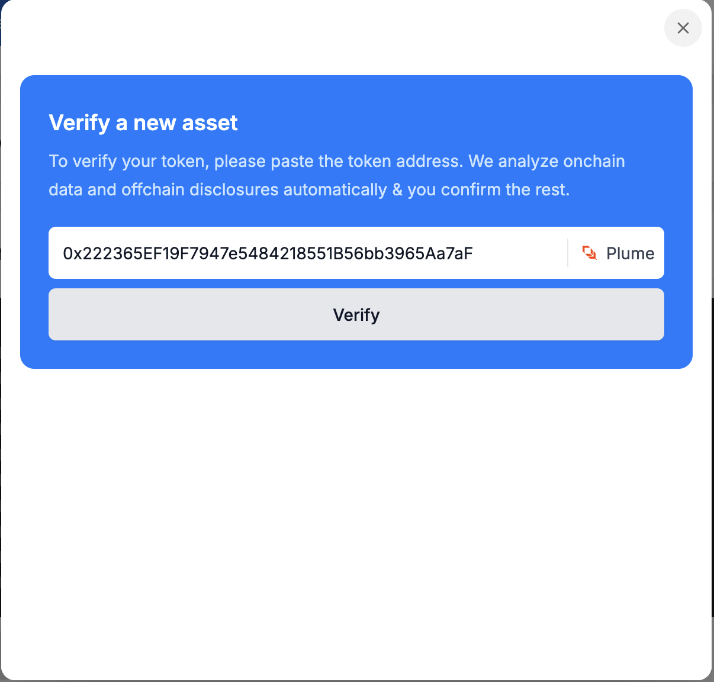
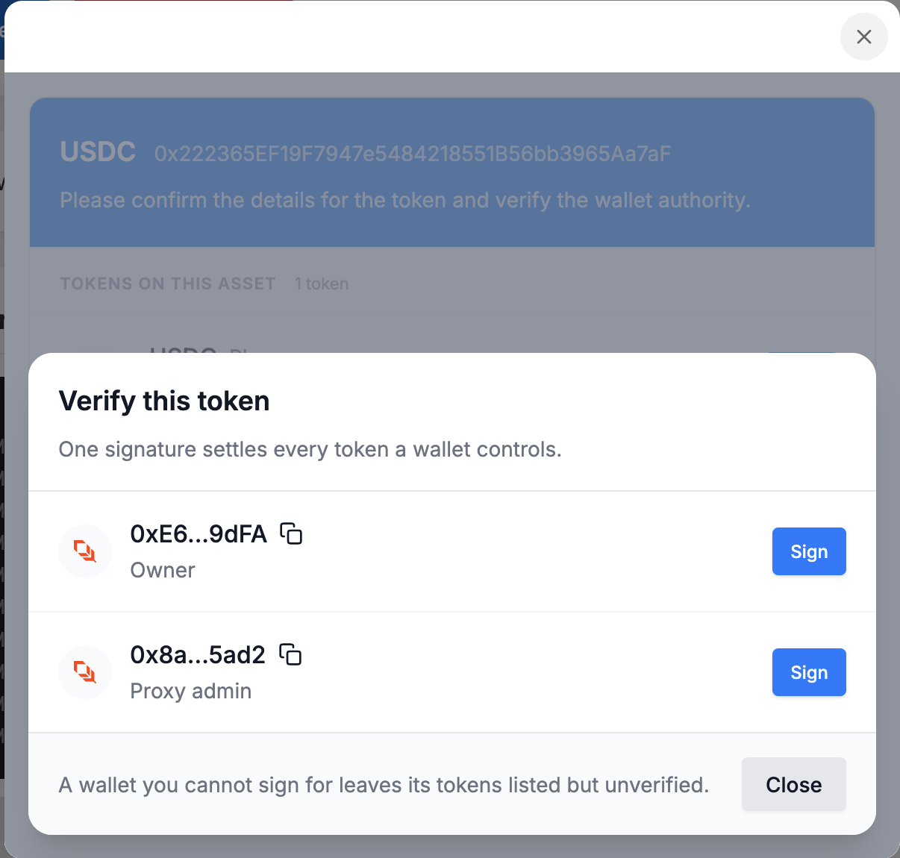

Verification
What your users do inside the widget, which chains are supported, and the ways they can prove they control a wallet.
The flow
- The user completes a KYB (Know Your Business) check. This happens once, before their first asset.
- They paste their token's address. Bluprynt detects which chain it's on, reads on-chain data and off-chain disclosures, and asks the user to confirm the rest.
- Bluprynt lists the wallets with authority over the token, such as the owner or proxy admin, and the user signs with each one.
- Bluprynt creates an on-chain identity for the user, which is then subject to ongoing compliance checks.

One signature covers every token a wallet controls, even across assets, so a user with several tokens behind the same owner wallet only signs once. If the user can't sign for one of the wallets, its tokens stay listed but unverified.

Supported chains
| Chain | Type |
|---|---|
| Ethereum | EVM |
| Base | EVM |
| Plume | EVM |
| Avalanche C-Chain | EVM |
| Solana | Solana |
| XRP Ledger | XRPL |
More EVM chains are being added. If your issuers use a chain that isn't listed, ask your Bluprynt representative.
Wallet verification methods
Most methods ask the user to sign a short challenge message. Signing happens off-chain, so no funds move and there's no gas fee. The message expires after a while. Browser wallets fetch a new one automatically, and the other methods offer a "Get a new message" link.
Browser wallet
The user connects a browser extension wallet and signs the message. Verification is instant.
- EVM and Solana: Phantom.
- XRP Ledger: GemWallet or Crossmark.
WalletConnect
Lets EVM and Solana users sign with MetaMask, mobile wallets and anything else WalletConnect supports. Verification is instant.
Manual signature
For keys that don't live in a browser wallet. The user copies the challenge message, signs it with their own tooling, and pastes the signature back.
- EVM:
cast wallet sign --interactive "<message>", or any tool that does an EIP-191personal_sign. Instant. - Solana:
solana sign-offchain-message -k <keypair.json> "<message>". Reviewed by Bluprynt before it's confirmed. - XRP Ledger: a short script using the
xrplorripple-keypairslibrary. The widget shows an example. Instant.
HSM or custody
For keys held in a hardware security module or by a custodian that can't sign arbitrary messages. The user sends a transaction from the wallet that does nothing except carry this memo:
Bluprynt KYI verification: Selected wallet <address> confirms authorityThey then email a link to the transaction to product@bluprynt.com. Verification stays pending until Bluprynt has reviewed it. The transaction pays normal network fees.
Micro-transaction
EVM only. The widget shows a small ETH amount and a Bluprynt verification address. The user sends exactly that amount from the wallet and pastes the transaction hash. They can close the widget and come back later, as long as the challenge hasn't expired. Verification is instant once the transaction is found.
Multisig wallets
If the authority is a multisig, the user can sign either as the multisig itself or as any one of its signers.